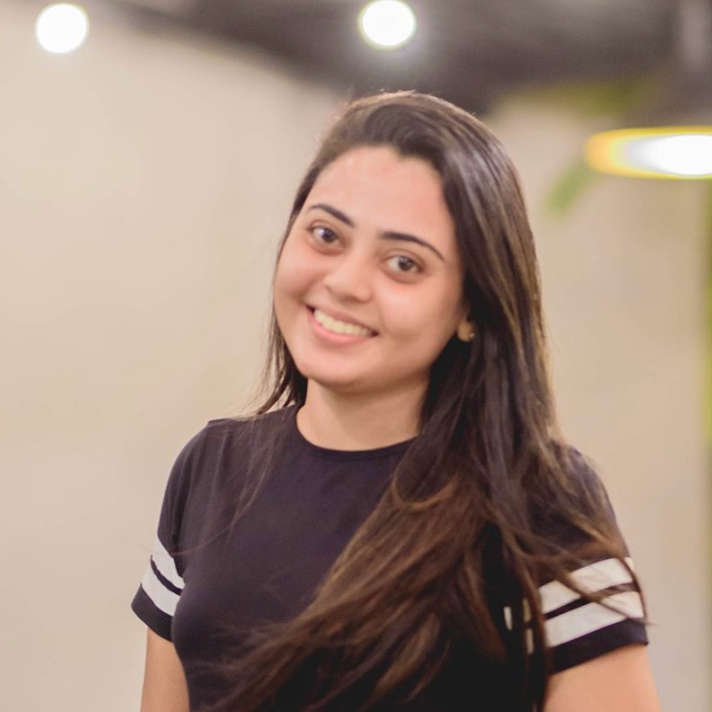

|

|
Yasasi AbeysinghePh.D. StudentDepartment of Computer ScienceCollege of Science Old Dominion University Norfolk, VA 23529 yasasi@cs.odu.edu |
I am a part of, Neuro-Information Retrieval and Data Science (NIRDS) Lab Web Science and Digital Libraries (WS-DL) Research Group |
About MeI am a Ph.D. student in Computer Science at Old Dominion University, USA. Prior to that, I was working as a Senior Software Engineer at Sysco LABS. I graduated with a B.Sc. Engineering (Hons) degree in Computer Science and Engineering at University of Moratuwa in 2018 with first class honours.Research Interests: Machine Learning, Data Science, and Human Computer Interaction |